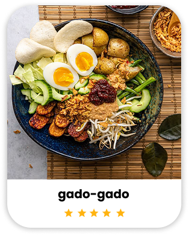

OUR MENU



Menu variatif setiap hari, seperti masakan ibu di rumah. Gak ribet, gak mahal, langsung antar!
pesan sekarangfresh food
free delivery
*max. jarak 3 km
porsi pas,
harga ramah
Nusajian ialah bisnis yang diciptakan oleh kami 'Ika Safitri (22.11.5153), Juventania Sheva Mellany (22.11.5154), Fera Saadatul Cahyani (22.11.5165) & Nadia Silvia Sari (22.11.5167)'. Kami menyajikan menu rumahan yang variatif, dimasak dari bahan segar dan rempah pilihan, agar kamu bisa menikmati makanan enak tanpa ribet.
Nama Nusajian berasal dari kata "Nusantara" dan "sajian", karena kami ingin membawa cita rasa masakan Indonesia yang akrab, hangat, dan penuh rasa ke meja makanmu — setiap hari.
Kerjaan numpuk, kadang gak sempat mikirin mau makan apa. Untung ada Nusajian, tinggal pesan, makanannya udah sampai. Rasanya enak, gak bikin kantong jebol, dan yang paling penting gak ngebosenin
Rekomendasi banget ngecatering disini, karena cita rasanya enak banget kaya masakan rumahan, jadi ngobatin rasa kangen sama masakan ibu!
Awalnya iseng coba karena capek makan itu-itu terus. Eh, keterusan langganan! Menunya beda-beda tiap hari, rasanya kayak masakan rumah, dan gak perlu ribet mikirin makan siang lagi. Makasih Nusajian, hariku jadi lebih ringan!